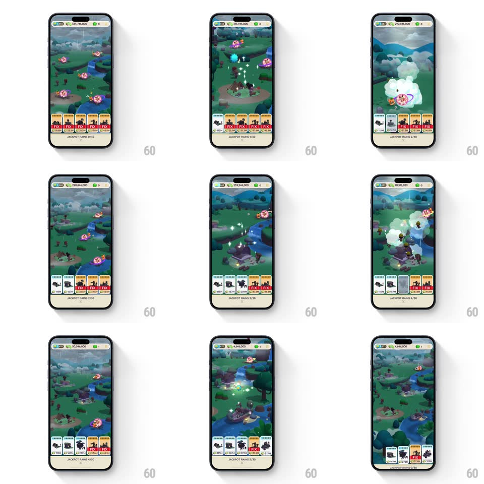

Media
Frame-by-frame

Rebuild this interaction 1:1: Monopoly GO's property repair loop - the board pans to a map of damaged landmarks, each with a red "FIX" price card along the bottom; tapping FIX spends cash with a burst of sparkles as the building restores, and the "JACKPOT RAINS n/30" counter ticks up.

Rebuild this interaction 1:1: Monopoly GO's property repair loop - the board pans to a map of damaged landmarks, each with a red "FIX" price card along the bottom; tapping FIX spends cash with a burst of sparkles as the building restores, and the "JACKPOT RAINS n/30" counter ticks up. ## Integration Integration: stack-agnostic spec - springs given as stiffness/damping, timed motions as duration + curve; map every value to your framework and animation library of choice. ## Scene The Monopoly board, then a zoomed-out landscape map (green hills, river, broken darkened buildings). Bottom: a row of property cards with thumbnail, cost, and a red "FIX" tag. HUD: cash counter top, "JACKPOT RAINS n/30" progress at bottom. ## Motion spec Pattern: map repair sequence with cost-and-celebrate beats. - Board to map: the camera pulls back and up (600ms, ease-in-out) - board to world view - while the FIX cards slide up and stagger in (spring ~360/20, 60ms apart). - Tap FIX: the card dips (scale 0.94, 120ms), the cash counter rolls down (digit roll, 400ms), and the camera glides to that property (500ms). - The repair: a sparkle storm swirls over the building (20-30 particles orbiting inward, 800ms), the structure pieces itself together (roof, walls popping in with scale springs ~380/16, 120ms apart), and a final white flash + ring shockwave (300ms) resolves it into full color. - The FIX card grays out with a check stamp; "JACKPOT RAINS" ticks up with a pop (scale 1.2 -> 1) each repair. - Map idles with drifting clouds and flag flutters - the world is alive between taps. ## Calibration - The camera ALWAYS travels to the property being fixed - no off-screen repairs. - Cost roll-down and sparkle start are simultaneous - spending and fixing are one beat. ## Reduced motion Camera cuts; buildings fade to repaired; no particles. ## Don't miss - Restoration is staged (sparkle -> structure -> flash) - a single fade would waste the fantasy. - The counter's pop ties each repair to the jackpot meta-goal.